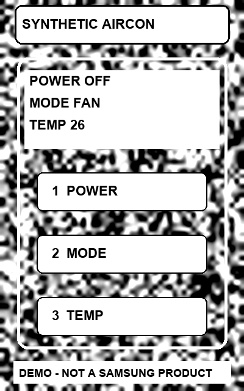
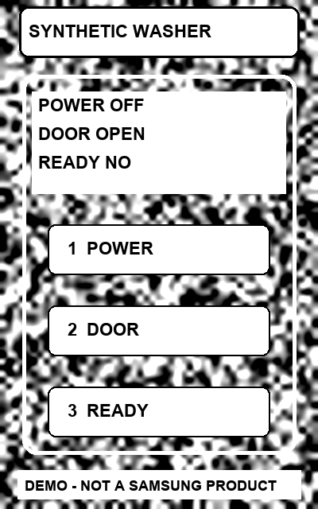
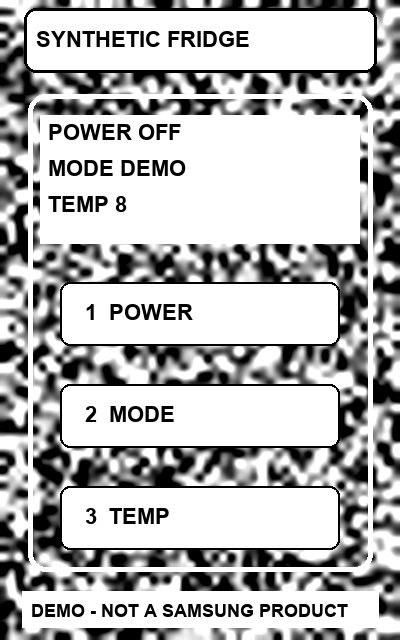
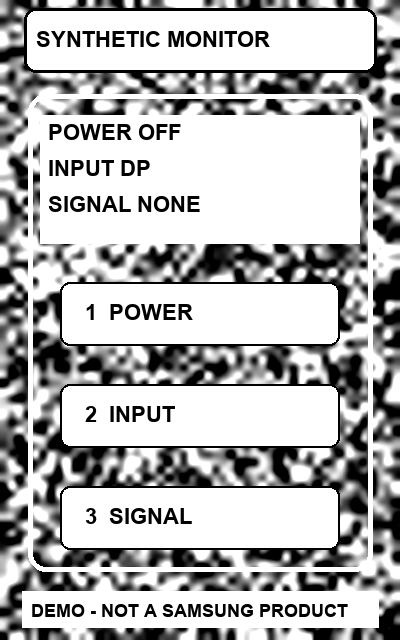

카메라를 시작하거나 합성 영상으로 확인해 보세요.
카메라 영상은 이 기기에서만 분석하며 저장하거나 전송하지 않습니다.
타깃 불러오는 중…
1. 제품 찾기
사용 방법
- 타깃을 준비합니다. PC에서 타깃 화면을 열거나 아래 타깃 이미지를 다른 화면에 띄웁니다.
- [카메라 시작]을 누르고 권한을 허용한 뒤, 타깃 전체가 보이고 화면의 1/3 이상 차지하도록 비춥니다.
- 알맞은 후보가 보이면 [후보가 맞아요]를 누르고 증상을 확인합니다.
- [Overlay 안내 시작]을 누르면 노란 영역이 조작할 위치를 알려 줍니다. 표시를 직접 확인한 뒤 [확인함]을 누르세요.
정면에서 밝게 비추고, 반사·흔들림·PC 화면의 가는 줄무늬(모아레)를 피하면 더 잘 찾습니다. 타깃을 가리거나 치우면 Overlay가 바로 사라집니다.
타깃 이미지
PC에서는 타깃 화면이 표시 상태를 바꿀 수 있어 단계 실습에 알맞습니다. 이미지를 인쇄하거나 다른 화면에 띄우면 Overlay 위치만 확인할 수 있고 표시 상태는 바뀌지 않습니다.
타깃 이미지 4종 보기

에어컨 
세탁기 
냉장고 
모니터


한계와 확인 범위
- 합성 타깃 4종만 인식합니다. 삼성 실제 제품은 인식하지 않으며 제품 사진도 포함하지 않습니다.
- 학습한 AI 모델이 아니라 특징점 매칭으로 등록 이미지를 찾습니다. 처리는 이 브라우저 안에서만 합니다.
- Overlay는 마지막으로 분석한 프레임을 따라가므로 기기 속도에 따라 움직임보다 늦을 수 있습니다.
- 인식 가능 범위는 합성 영상으로만 측정했습니다. 실제 휴대폰에서의 정확도는 측정하지 않았습니다.
- 단계 완료는 사용자가 직접 누릅니다. 앱이 화면 상태나 실제 고장 해결 여부를 판정하지 않습니다.
- HTTPS 주소와 카메라 권한이 필요합니다. iOS Safari와 Galaxy 실기기 동작은 아직 확인하지 못했습니다.